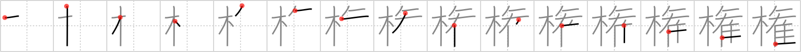

権
← →
authority

Reading:
On-Yomi: ケン、ゴン — Kun-Yomi: おもり、かり、はか.る
Heisig story:
Tree . . . Pegasus.
Koohii stories:
1) [fuaburisu] 11-10-2005(228): I have Eric Cartman of the “South Park” animated series, wearing a cop uniform, riding a wooden Pegasus (such as on a funfair), and yelling “RESPECT MY AUTHORITAH!!!”.
2) [wasurenaide] 10-6-2007(146): No one has the authority to tie up a pegasus to a tree!
3) [libsrone] 25-4-2008(31): The park authorities are here, making sure everyone's dog is on a leash and everyone's pegasus is tied to a tree.
4) [blair79] 15-3-2007(24): "Respect my AUTHORITY," said Cartman as he whacked PEGASUS with his TREE.
5) [Wosret] 13-2-2009(21): Pegasus has authority over the trees, because she can fly.